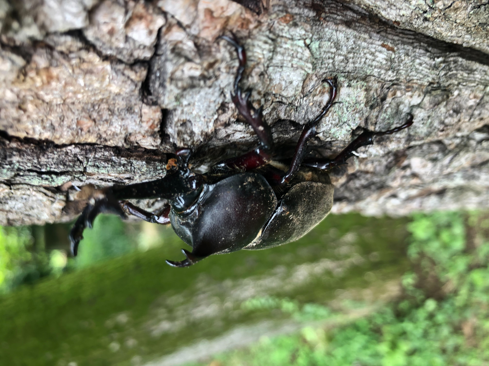
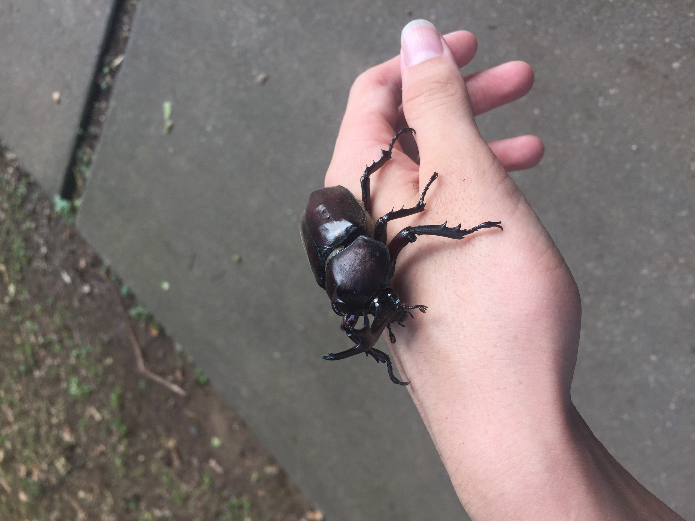
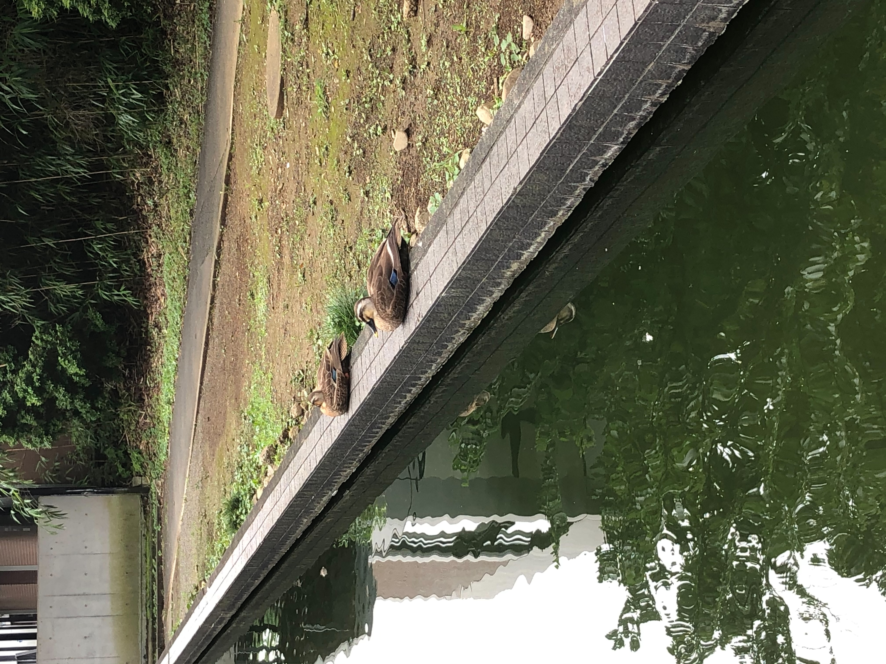
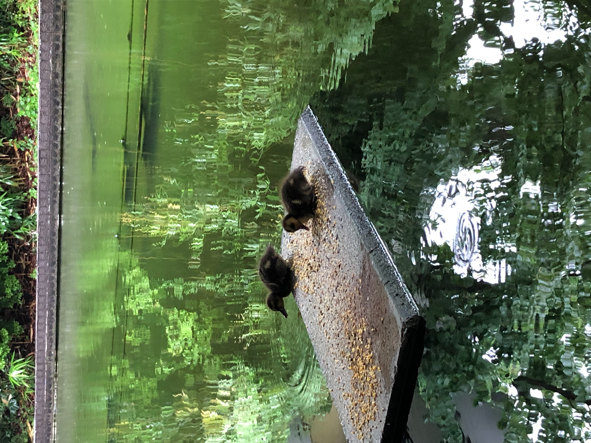
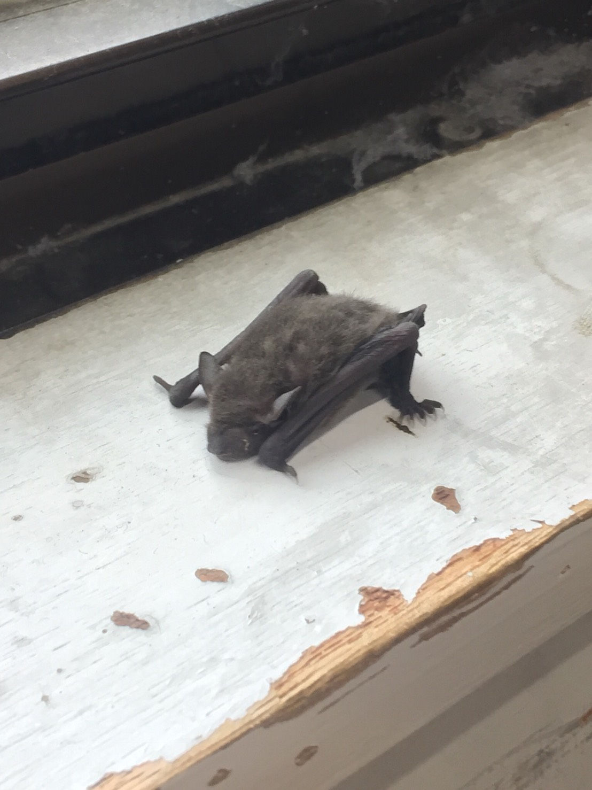
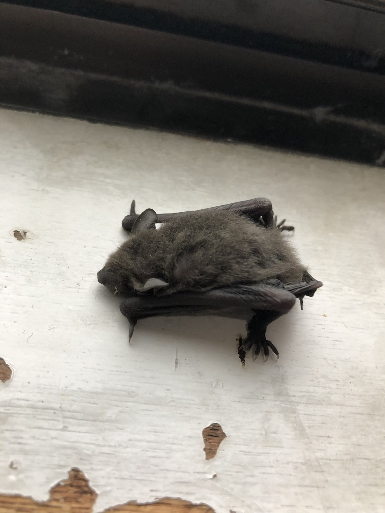

慶應義塾志木高等学校
～志木高列伝～
TOPへ戻る
本来、このパージには受験生の方たち向けに「慶應義塾志木高等学校はこんな学校だよ」と紹介するはずでした。
しかしこのサイトは生徒や保護者の方のみが閲覧できるということになりました。もちろん皆さんは学校のことなんてたくさん知っていると思います。
そのため、皆さん既知の可能性もありますがこのサイトの筆者がこの学校で見つける生き物を紹介していきたいと思います。
 
私はこの学校に入学してから４年間、毎年夏にカブトムシ探しをするために朝早くに学校へ足を運びました。
しかし私は運がないのか、クワガタのオスは死骸しか見たことがありません。カブトムシよりもクワガタのほうが好きな私は結局一度もクワガタのオスの写真を撮れないまま卒業することになりそうです。
皆さんがよく知っているカブトムシスポットはおそらく去来舎の横に立っている木の根元だと思います。あそこは例年よく樹液が出るのですが、今年はあまり出ていなくてカブトムシは少なかったですね。
来年皆さんが友達と一緒に探して遊ぶことができるように武道場の裏の林にもたくさんのカブトムシやクワガタがいるということをここに書いておきますね。
 
私はよくご飯を鴨池で食べるので、よく用務員さんにカモの話を聞かせていただきます。
用務員さんと話しているうちに、私がこの学校入学した2018年以来３年ぶりにやっと４匹のコガモが鴨池に誕生しました。
2018年にはアオダイショウがカモを襲い、用務員さんに尻尾をつかまれて頭を地面にたたきつけられるという事件も起きました。
しばらく見ることができなかったので今年コガモが生まれてうれしく思っていました。しかし結局コガモたちは１匹も巣立ちをしませんでした。
みんな足が悪く、自然界では生きていけなかったのでしょう。来年こそは元気にコガモが誕生して、巣立ちを迎えてほしいと心の底から願っています。
 
コウモリは今まで一度しか見たことがありませんが、面白いので紹介します。
私が剣道部の部室に入ったときに、部室の隅の窓辺でコウモリが寝ていました。
私はコウモリは天井からぶら下がりながら寝るのかな、とか思っていたのですが実際は普通に寝ていました。普通にかわいいかったです。